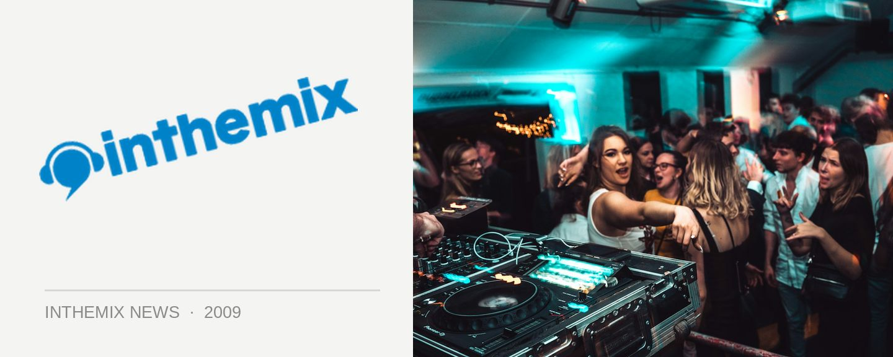

Tydi retains Sony inthemix50 crown in the poll's biggest year ever!
SEE ALL THE PICS FROM THE 2009 SONY INTHEMIX50 AWARDS NIGHT
Queensland’s golden boy of trance Tydi has taken home the coveted #1 prize in the 2009 Sony inthemix50 awards for the second year in a row, with the overall results full of unexpected and exciting surprises from right around the country. Voting was up Australia-wide in the poll’s biggest year on record, with the inthemix50 embraced more than ever before by punters and the industry alike. 33,000 votes were cast, an increase of more than 50% on 2008’s final tally!
Tydi’s second consecutive win comes at the end of what has been a massive 12 months for the young DJ and producer. Touring relentlessly and playing some of our biggest events and festivals in Australia and beyond, Tydi proved simply too alluring for Australia’s dance fans. Melbourne’s Andy Murphy was the other big winner in this year’s poll, rocketing up 20 places to take the #2 spot overall, as well as the #1 place for Victoria. It was a reflection of Victoria having tallied more votes than New South Wales for the first time ever.
ACT high-rollers The Aston Shuffle increased their standing, moving up to third place on the national list, the highest ranking ever for a Canberra act. The national top 5 is rounded out by NSW top performer Ajax as well as Queensland’s Stafford Brothers. Sydney’s Bass Kleph had the biggest increase overall in the poll, moving up a hefty 26 spots. South Australia cracked the national top 10 for the first time ever, with electro upstarts Loot & Plunder shooting into #7, while Micah returned as the state favourite for Western Australia.
On the event side of things, the Future Entertainment was the clear winner as the favourite for NSW, QLD, SA and WA, while Melbourne’s NYE spectacular Sensation took the Victorian prize in its first ever year on the scene. Canberra’s Foreshore was again the favourite event for the ACT. The Presets, no doubt Australia’s biggest dance outfit, won in the newly named Favourite Live Act/Producer category, while world #1 DJ Armin van Buuren was voted Australia’s Favourite International Act.
CHECK OUT THE SONY INTHEMIX50 RESULTS FOR 2009!
SEE ALL THE PICS FROM THE 2009 SONY INTHEMIX50 AWARDS NIGHT